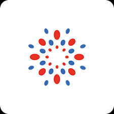

Estado Actual (Fase 1 — MVP)
Bot Engine
bot.py + knowledge_base.py
(estático, en memoria)
→
(estático, en memoria)

Evolución del proyecto desde MVP hasta modelo fine-tuned en producción
RAG, persistencia, caché y sesiones individuales
Modelo personalizado, clasificación de intenciones y evaluación automatizada
Multi-modal, transaccional, sentimiento y escalamiento inteligente